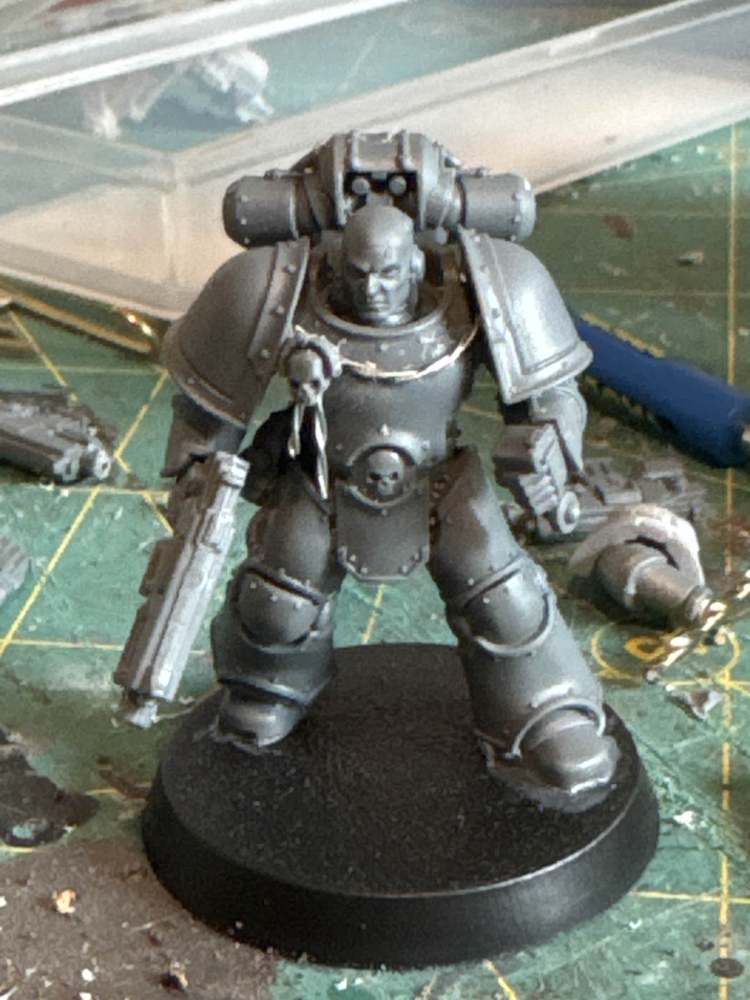
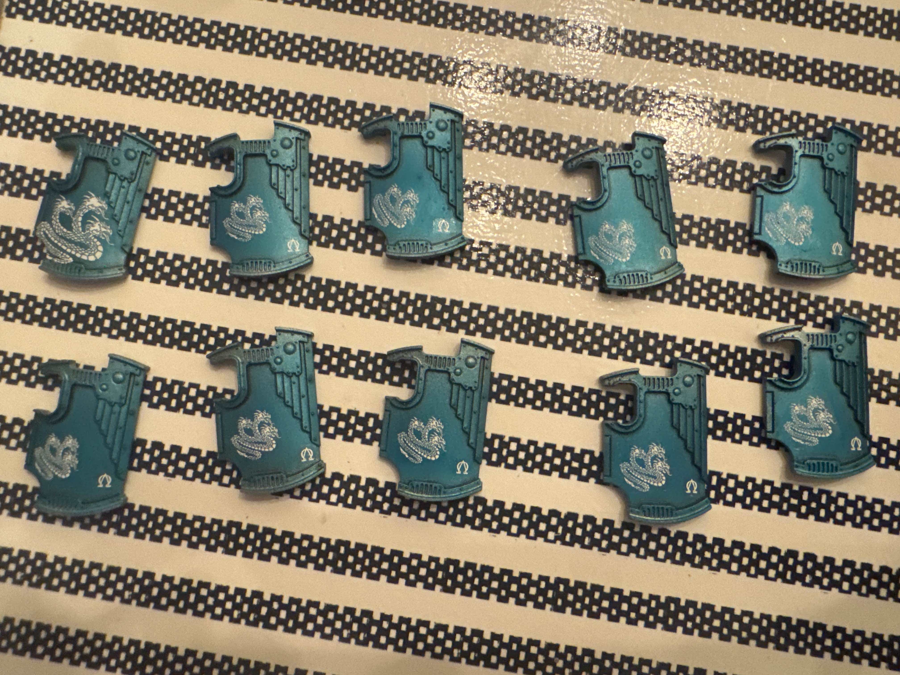

The first hobby project I have begun to undertake this year is finishing painting my Zone Mortalis List for Alpha Legion, starting this with the new plastic breacher squads.
Building:
The only picture I took of the unit during assembly was the sergeant, pirmarily because of the "rope" on his chest. To create this I got some thin wire, put it in my pin vice, and spun it around itself. This made a very nice looking rope effect. The sergeant's right arm is also magnetized to swap his weapon loadouts as I don't know what weapon to give him yet.

Painting:
The recipe I use for Alpha Legion is very simple:
- Spray prime with platemail
- nulin oil recess wash
- drybrush with stormhost silver
- airbrush kroxigor scales over entire model
- airbsuh gloss varnish
Using this method creates the sort of "candy colored" look that the twentieth legion is known for. Using the gloss varnish also creates the prefect surface for decal application in later steps.

I normally don't use sub assemblies as they complicate projects too much, but for this I painted the shields and marines separately.
After finishing the blue on the models, I went onto the finer details, starting with the decals:

Normally I don't apply the decals this early, but the shields have such a large flat surface that they're perfect for decals, giving me plenty of space to add them. The squad has relatively simple heraldry on the shields, using a hydra and small alpha legion symbol. The sergeant has a different decal to differentiate him from the rest of the squad further (totally not because I broke a decal while applying it and had to use a different one).
For the eyes of the marines I started by filling the eye sockets with bold titanium white, followed painting baal red over this, using a wet brush to wick out some of the red, giving a glow effect.
Next, I blocked out any gunmetal areas using leadbelcher, washing with nulin oil, and edge highlighting with stormhost silver.